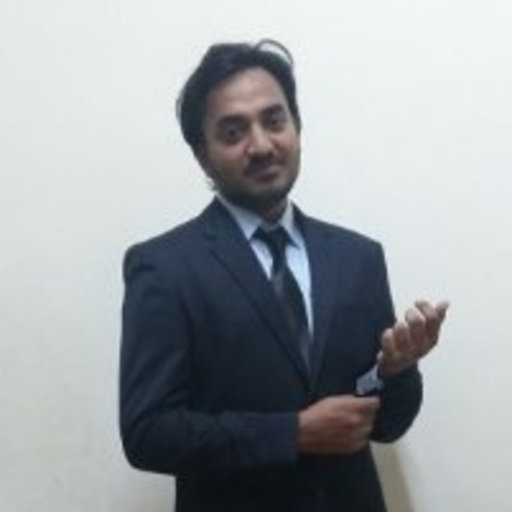

Welcome to my digital Garden !
My name is Pavan, and I'm a Mathematician by training with a keen interest  in Quantitative finance and related topics. I work in the Risk division of NatWest Group, based in Edinburgh, UK. I believe that sharing ideas and learning from others is crucial for personal growth and collective progress, and that's why I'm excited to have this digital garden as a platform for conversation and exploration.
This is a space where I save my thoughts, ideas, and notes in a nonlinear way. Think of it as a collection of interconnected and ever-growing notes that reflect my curiosity, interests, and ongoing learning process. Unlike a blog, where each post is a standalone piece of content that follows a certain format, a digital garden is more like a living document that I update and refine over time. Some of the notes may be rough and incomplete, while others may be more developed and polished. This diversity reflects the different stages and contexts of my thinking, and I invite you to explore it freely and make your own connections and interpretations.
I hope that you will find something interesting or inspiring in my digital garden, and that it will spark your own curiosity and creativity. Feel free to browse, search, comment, or share any of the notes that resonate with you. And if you have any feedback, suggestions, or questions, don't hesitate to contact me at pavan_donthireddy@outlook.com